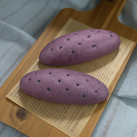

米粉のパンと米粉のお菓子
BREAD＆TREATS
ご購入を検討される方は
>> 注意事項をご確認ください。
当店のおすすめ商品
花酵母のパン


期間限定
まるで本物？さつまいもぱん
見た目はもちろん、中身もさつまいもが詰まっている少し甘めなパン。熱に強い芋のビタミンCも摂れて身体にうれしい♡
かぼちゃチーズパン

加熱したかぼちゃを生地に練り込み、アレルギー対応の豆乳チーズを包み込んだ食事パン。かぼちゃに豊富なビタミンAと、噛むほどに広がるやさしい甘みが魅力です。
BREAD
当店のパンについて
米粉パンは、小麦パンに比べて価格のわりにやや小ぶりですが、1つ食べるだけでしっかりと満足感が得られます。よく噛まないと飲み込めないため唾液が分泌され、消化をサポートしてくれます。さらに、米粉パンは吸収がゆるやかなので腹持ちも抜群です。
いつもより少なめに食べるようにしてみてくださいね。
無添加にこだわる当店では、発酵に使う素材にも心を配り、イーストではなく酵母を使っています。使用する酵母は2種類あり、そのひとつは希少な「花酵母」。
酵母の種類にも着目して食べ比べやパン選びをお楽しみください。
：白神こだま酵母のパン
青森県と秋田県にまたがる世界自然遺産「白神山地」で、日本の酵母研究の第一人者・小玉健吉博士と秋田県総合食品研究所の共同研究により発見された野生酵母。砂糖の約4割の甘さで、保水性やでんぷんの老化抑制に優れる天然糖質「トレハロース」を一般的な酵母の4～5倍多く含みます。そのため、ほんのりとした甘みとしっとりした食感を生み出し、冷凍耐性にも強く、米粉パンとの相性は抜群です。
：花酵母のパン
名城大学の特殊な技術で作られる酵母菌を扱う「花酵母factory」様と契約し、当店では桜酵母を使った米粉パンを展開しております。花酵母は、管理された酵母のため安心で高品質、安定しているのが特徴です。仕上がりは通常よりもさらにしっとり柔らかで、ふわもち食感が長く続きます。常温での賞味期限も1日長く、冷凍保存にも適しています。発酵に米麹を使うため、当店で糖質として使うみりんと共に発酵食品を摂れて、今注目の腸活にも効果が期待できます。限られたベーカリーでしか扱えない特別な花酵母、ぜひ一度ご賞味ください。その美味しさに思わずニッコリです♡
食事パン
まるぱん

米粉成形パンの定番。噛み応えがあるのにふわもち新食感♡
かわいいまんまるフォルムの食べやすいサイズ。
ロールパン
食事パンにちょうどいい、食べやすい形とサイズです。ジャムやハムなどをはさんで食べても美味。
レーズンパン

どんな食事にも合うレーズンパン。自然な甘みと栄養が嬉しい。ふわもち食感と自然な甘さで飽きの来ない味わい。
くるみぱん
栄養価の高いクルミを混ぜ込んだ生地は少し香ばしく、噛むと一段と食欲をアップさせます。ふわっと優しい美味しさ。
米粉ミニ食パン

小ぶりですが思った以上にずっしり。米粉をたっぷり使っているからこその満足感。ふわふわ食感で、お腹持ちも抜群です。
米粉フランスパン

見た目は小麦パンより小ぶり。表面のハードさとは裏腹に中生地は優しいふわもちな食感。オリーブオイルやジャム、サンドパンにしても◎。
米粉ミニフランスパン

食べやすいミニサイズ。ハードさとソフトさを併せ持ち、ハーフカットでサンドにも最適。噛みごたえがあり崩れにくく、1つで満足でき腹持ちもgood！
リンゴジュース仕込みのまるぱん
花酵母と信州産のリンゴストレートジュースを使い、水も砂糖も一切使用していません。自然な甘さと噛むほどに感じるしっとり生地をお楽しみください。
リンゴジュース仕込みレーズンパン
弾力のあるふわふわ生地にレーズンを入れました。ほのかに香るリンゴは甘さ控えめで食事の邪魔になりません。
リンゴジュース仕込み米粉ミニ食パン
ふわふわなのにしっとりもちもち。弾力があり、薄切りにも適しているのでサンドパンとしても最適です。リンゴのほのかな甘みが具材を引き立てます。
リンゴジュース仕込みフランスパン
ハードな表面としっかりした弾力、なのに中はふわもちという、不思議食感のフランスパン。サンドやオリーブオイル、ジャムとも相性ぴったりです。
リンゴジュース仕込み米粉ミニフランスパン
食べやすいミニサイズ。ハードさとソフトさを併せ持ち、ハーフカットでサンドにも最適。噛みごたえがあり崩れにくく、1つで満足でき腹持ちもgood！
豆乳仕込みのまるぱん
花酵母と無調整豆乳を使い、水も砂糖も一切不使用。油も通常の半分。自然の甘さと噛むとわかる保水生地をにはタンパク質も多いので一段と腹持ち良く、朝食にも最適です。
豆乳仕込みのロールパン
花酵母と無調整豆乳を使い、水も砂糖も一切不使用。油も通常の半分。少し香ばしくもほんのり甘くしっとりもっちりなのにふわふわ。タンパク質が多く腹持ち良いです。
豆乳仕込みの米粉ミニ食パン
花酵母と無調整豆乳を使い、水も砂糖も一切不使用。油も通常の半分。ずっしりとした重さの生地にはタンパク質が詰まっています。食べると嘘のようにふんわりとしていて不思議なほど水分を感じます。サンドパンにもぜひ。
豆乳仕込みのフランスパン
花酵母と無調整豆乳を使い、水も砂糖も一切不使用。油も通常の半分。自然の甘さと噛むとわかる保水生地をにはタンパク質も多いので一段と腹持ち良く、朝食にも最適です。
豆乳仕込みのミニフランスパン
花酵母と無調整豆乳を使い、水も砂糖も一切不使用。油も通常の半分。自然の甘さと噛むとわかる保水生地はタンパク質豊富。ハムやベーコンなどチーズとともに挟んだら一段と腹持ち良いです。
総菜パン
ウインナーパン

アレルギー対応・無添加にこだわったウインナーと、リコピン豊富なケチャップで安心＆栄養アップ。美味しくて満足感◎
ハムコーンパン

アレルギー対応、無添加のこだわりハムに豆乳チーズで安心。チーズのカリカリ食感が楽しい定番ハムコーン！
豆乳チーズコーンパン

アレルギー対応の豆乳チーズで安心。チーズとコーンを包んだコッペパンで、噛むほどにやさしい甘みが広がります。
ピザ

子どもから大人まで大人気。腹持ちがよく朝食にもぴったり。豆乳チーズと無添加トッピングで栄養と安心をプラス♡
ベーコンエピ

香ばしく焼けた無添加ベーコンにツンとスパイシーなブラックペッパー。カリッと生地にベーコンの旨味が引き立ちます。
豆乳仕込みウインナーパン
花酵母と無調整豆乳を使い、水も砂糖も一切不使用。油も通常の半分。自然の甘さと噛むとわかる保水生地をにはタンパク質も多いので一段と腹持ち良く、朝食にも最適です。
豆乳仕込みのハムコーンパン
花酵母と無調整豆乳を使い、水も砂糖も一切不使用。油も通常の半分。自然の甘さと噛むとわかる保水生地をにはタンパク質も多いので一段と腹持ち良く、朝食にも最適です。
豆乳仕込みのハムチーズロールパン
花酵母と無調整豆乳を使い、水も砂糖も一切不使用。油も通常の半分。表面はパリッとしているのに中はふんわり。タンパク質が多く腹持ち良いのでお子様やスポーツの前にも最適。
スイーツパン
シナモンロール

くるくるフォルムのシナモンロール。上がけシロップを使わない、甘さ控えめ仕様。噛むほどに優しい甘さが広がります。
ショコラクランベリーロールパン

ビターなショコラ生地に、チョコチップとドライクランベリーの甘みをプラス。控えめな甘さで、後味も軽やかです。
西尾抹茶のホワイトチョコロールパン

地元の西尾産抹茶を生地に練りこみ、ホワイトチョコを合わせました。とろけたチョコのミルキーな風味が嬉しい一品です。
チョコチップスティックパン

子どもに人気の定番スティックパン。食べやすく大人にも大好評です。米粉とチョコチップの優しい甘さが広がります。
リンゴジュース仕込みアールグレイ檸檬ロール
どんな食事にも合うレーズンパン。自然な甘みと栄養が嬉しい。ふわもち食感と自然な甘さで飽きの来ない味わい。
TREATS
お菓子
グルテンフリー、砂糖不使用で作ったこだわりのお菓子です。
バターはもちろん、マーガリンも使用しないのでトランス脂肪酸が気になる方にもおすすめです。
油はこめ油を最小限の量で使用し、ヘルシー志向に仕上げました。
市販のお菓子より甘さ控えめで、体にも心にも優しい美味しさを楽しめます。
お菓子によっては卵を使用しております。アレルギーをお持ちの方はご注意ください。
おからパウダーの抹茶ドーナツ

おからパウダーを使った揚げないドーナツ。食物繊維とタンパク質が豊富です。西尾抹茶の香りとミルキーなチョコチップが絶妙です。
おからパウダーのショコラドーナツ

おからパウダーを使った揚げないドーナツ。食物繊維とタンパク質が豊富です。ショコラ生地にチョコチップを合わせ、チョコ好きさんにはたまらないダブルチョコ仕様。
おからパウダーのキャラメルチョコドーナツ

おからパウダーを使った揚げないドーナツ。食物繊維とタンパク質が豊富です。ショコラ生地とキャラメルチョコチップで懐かしい味わいのふわふわなドーナツです。
オートミールレーズンクッキー

食物繊維豊富なオートミールを使ったクッキー。豆乳や蜂蜜、ドライフルーツを合わせ、タンパク質とミネラルもたっぷりです。少し固めでしっかり噛める、素朴で癖になる味わいです。
米粉のチョコチップマフィン
小ぶりながらも満足感のある、米粉仕立てのチョコマフィン。卵を使わずに焼き上げ、しっとりと優しい美味しさが楽しめます。
注意事項
当店では、通常は店頭での販売を行っておりません。
ご購入をご希望の方は、オンラインショップをご利用ください。（オンラインショップでは、配送または店頭受け取りのいずれかをお選びいただけます。）
また、不定期ではありますが、店頭販売を行うこともございます。日時はインスタグラムでお知らせしておりますので、ぜひチェックしてみてください。